Students
Students working on assignments, projects, or exam preparation who want to use AI to learn along the way, build their understanding, and complete their work without simply copying the answers.
No thoughtful option today
Case Study
An interactive AI app. Thinks with you, not for you. Built to strengthen your thinking.
AI can answer almost anything in seconds. But getting an answer isn’t the same as understanding it.
The solution was a different interaction model.
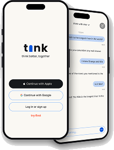
“You ask AI to solve problems, explain concepts, and generate ideas.
But is your thinking getting stronger, or just faster?”
AI makes information, learning, problem-solving, and creativity faster and more accessible. But how do we harness its efficiency without letting it replace the human skills that build competence, autonomy, and innovation?
Ask a question. Get an answer. Move on. When AI consistently does the cognitive work for us, we have fewer opportunities to recall, reason, and evaluate, potentially weakening the very skills that help us think independently.
ChatGPT, Claude, and Gemini are incredibly effective at getting us answers. But when the answer comes before the thinking, it becomes easier to rely on AI for the cognitive work we could otherwise do ourselves.
AI can be a powerful tool for creativity, learning, and problem-solving, but its convenience can also make it easy to outsource our thinking. I hypothesize that an AI designed as a thinking partner, rather than an answer provider, can preserve the benefits of AI while encouraging users to stay actively engaged in the thinking process.
I want to explore whether an AI that doesn’t think for you, but thinks with you, can make AI more supportive of human thinking rather than a substitute for it.
Students working on assignments, projects, or exam preparation who want to use AI to learn along the way, build their understanding, and complete their work without simply copying the answers.
No thoughtful option today
Working professionals and creatives who want to use AI to get work done while understanding the processes, reasoning, and skills behind their work, rather than simply relying on ready-made answers.
No thoughtful option today
Mindful AI users who want to use AI intentionally, strengthen their thinking, and get support without outsourcing their own judgment or skills.
No thoughtful option today
Three core principles guided the product from the start. Every screen and interaction had to follow them.
AI makes it effortless to hand over mental work.
When we repeatedly rely on AI to remember, reason, and solve for us, we get fewer opportunities to exercise those skills ourselves.
Most AI assistants are optimized to give you the answer.
You ask a question, receive a polished response, and move on. There is little need to pause, question, or work through the problem yourself.
The more AI does for us, the less involved we become.
Whether learning, working, or creating, users can end up accepting AI's output rather than developing their own understanding, judgment, or ideas.
These commitments clarified the design challenges and gave us direction for solving them.
I started by stripping the interface down to its essentials. These wireframes helped me figure out how each screen should be organized, how the different elements relate to one another, and how the experience flows from one state to the next.
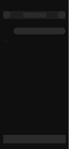
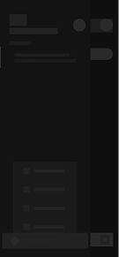
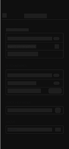
Lo-Fi · Structural Exploration · Screen Hierarchy
The core app states and interactions across onboarding, active conversations, navigation, and system settings.
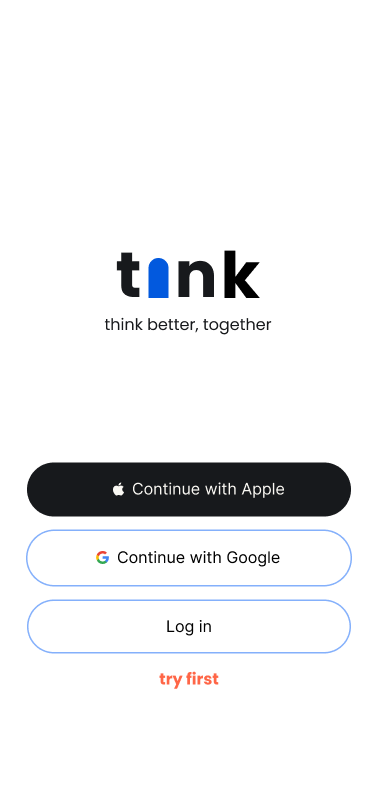
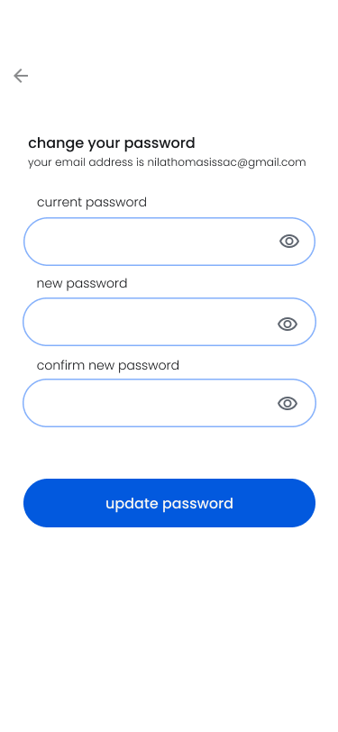
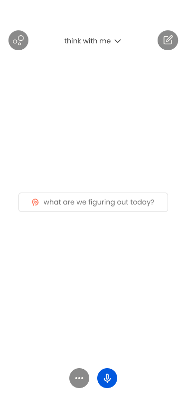
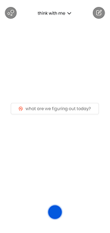
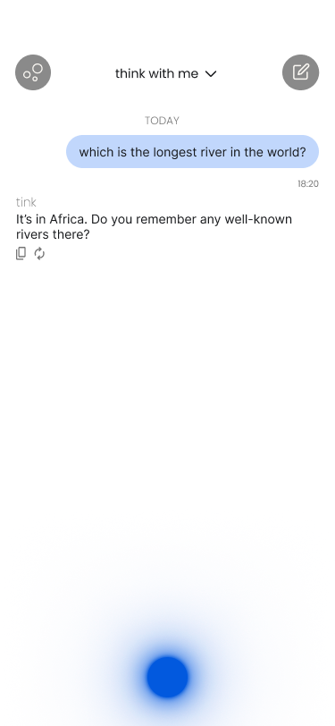
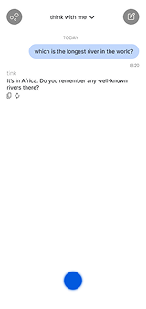
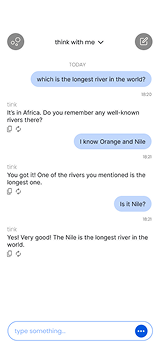
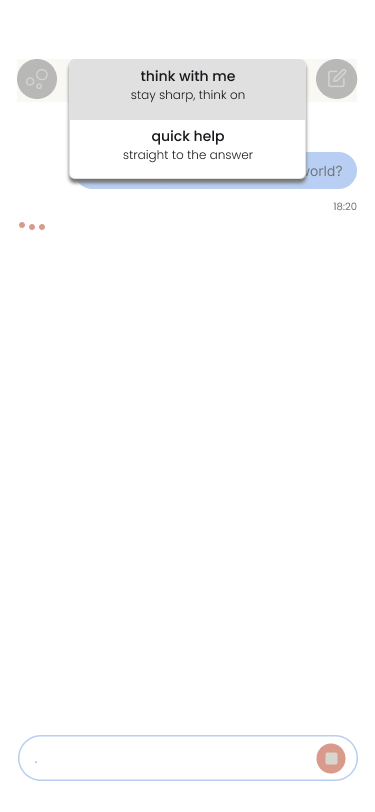
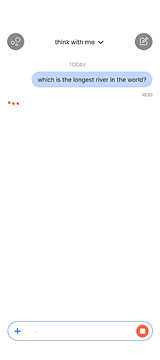
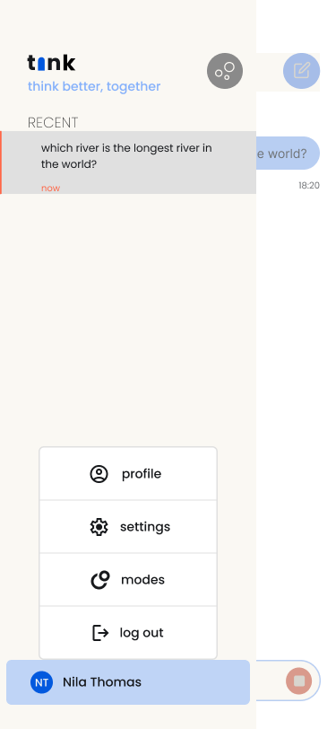
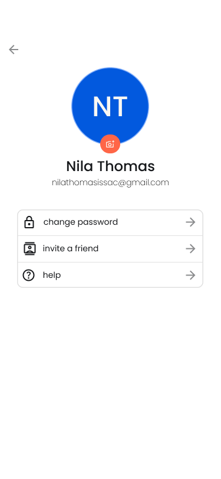
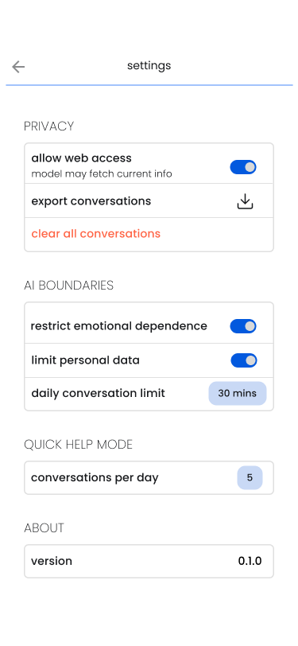
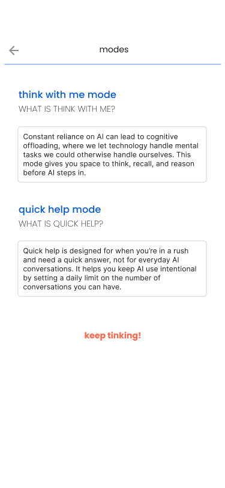

Explore the prototype to experience Tink’s interaction model firsthand, from conversations and navigation to the thinking modes at the heart of the experience.
Move between voice and text, explore the core flows, and see how each mode shapes the way Tink responds.
The prototype demonstrates how the thinking-partner approach carries through the experience.
Responsive Guidance
Welcome to Tink! Tap ‘Try First’ or ‘Log In’ to start exploring. Then talk or type to Tink, switch modes from the top, and open the side menu for your profile and settings.
Open full screenThe core thinking flow became one of the key parts of the design process, translating Tink’s central idea into an interaction users could experience.
Step 01 Start with a thought
The user brings Tink something they want to understand, solve, or explore.
Instead of immediately producing an answer, Tink considers how much support the user needs based on the selected mode.
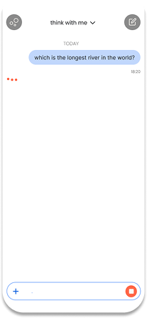
Step 02 Tink gives you something to think about
Rather than jumping straight to a solution, Tink responds with a question, prompt, hint, or perspective that helps the user approach the problem themselves.
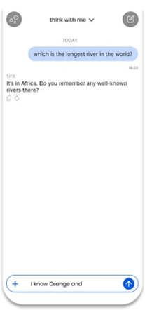
Step 03 The user contributes to the thinking
The user responds, makes a guess, explains their reasoning, or asks a follow-up.
The conversation becomes a back-and-forth, rather than a one-way exchange of answers.
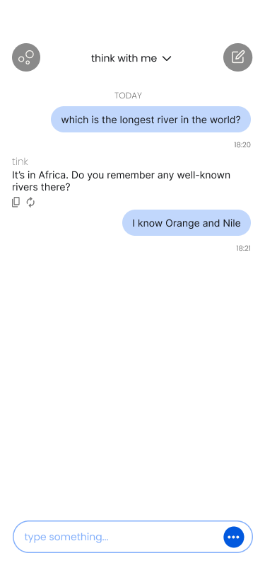
Step 04 Tink builds on their reasoning
Tink uses what the user has said to challenge, clarify, correct, or extend their thinking.
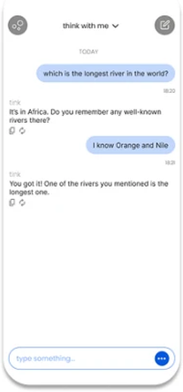
Step 05 The user arrives at the answer
The goal isn't to make the user struggle unnecessarily. When they need it, Tink can provide hints, explanations, or the answer itself, while keeping the user involved in the process.
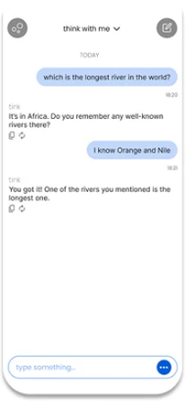
So instead of,
Question → Answer → Done
So instead of,
Question → Prompt → Think → Respond → Build → Understand
Since Tink is built around thinking through conversation, voice felt like a natural primary interaction. It lets users speak through an idea while Tink listens and responds, with the conversation continuing on screen.
Tink guides the user through a problem instead of giving the answer immediately.
Quick Help gives you direct answers for when you’re in a hurry, while letting you set your own usage limits.
The interaction model gave Tink a clear identity.
Thinking about AI as a partner rather than an answer provider helped shape the modes, conversation flow, and overall experience around one consistent idea.
I would define the response behavior earlier.
The concept became clearer once I started thinking through actual conversations. I would spend more time defining how Tink should guide, question, hint, and answer before designing the surrounding interface.
I realized Tink could extend beyond individual conversations. A community space could bring people together to explore ideas, with AI helping guide the discussion rather than taking it over.
How much guidance is actually helpful?
There is a fine line between encouraging someone to think and making a simple task feel unnecessarily difficult. Testing different levels of guidance with real users would be the next step.
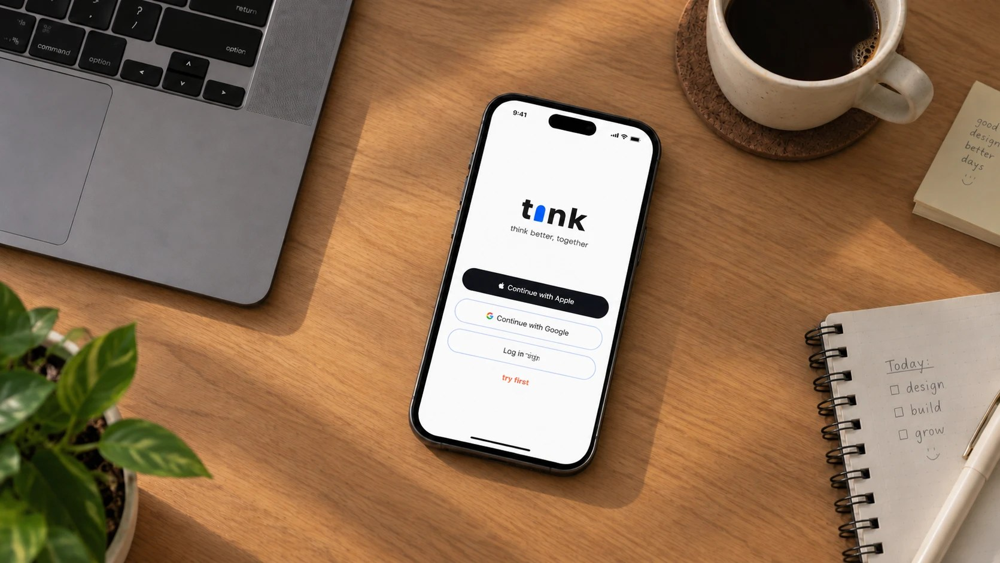